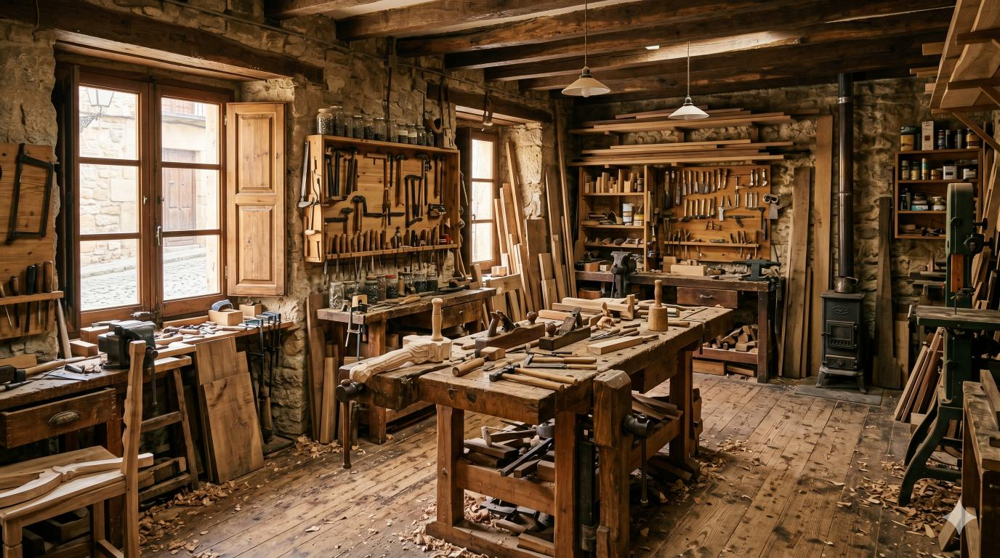

El Origen de WOODSTYLE: El valor de lo hecho a mano
"Vivimos en un mundo acelerado donde predomina lo efímero. MAESTRÍA nace como un refugio para detener el tiempo y reconectar con la materia."
Hace apenas tres años, un pequeño grupo de creadores locales se reunió con una inquietud común: las técnicas tradicionales se estaban perdiendo en favor de la producción en masa. Decidieron que era el momento de abrir las puertas de sus talleres, no solo para vender sus piezas, sino para educar y compartir su pasión con el mundo.
Lo que comenzó como una modesta feria de fin de semana, ha evolucionado hasta convertirse en estas jornadas. Un espacio donde la madera, el barro, el vidrio, los textiles y el metal cobran vida gracias a la dedicación absoluta de quienes han perfeccionado su oficio a lo largo de décadas.
- Preservación del Oficio
- Rescatamos y documentamos técnicas en peligro de extinción, transmitiéndolas directamente de maestros a nuevas generaciones.
- Sostenibilidad Real
- Fomentamos el uso de materiales locales, procesos de muy bajo impacto ambiental y la creación de objetos diseñados para durar toda la vida.
- Innovación Respetuosa
- Creemos firmemente en la combinación del saber hacer ancestral con el diseño contemporáneo, creando piezas únicas con identidad.
- Tejido Comunitario
- Construimos una red de apoyo mutuo entre creadores, proveedores locales y un público que valora el consumo consciente.
Un espacio para la divulgación, la práctica y el aprendizaje activo
Durante tres días completos, el antiguo recinto industrial se transformará en un inmenso taller abierto. Nuestra filosofía es clara: mirar no es suficiente. Queremos que los asistentes se manchen las manos de barro, huelan la madera recién cortada y sientan el calor de la fragua.
Por ello, las Jornadas de Fabricación Artesanal no son una simple exposición, sino una experiencia inmersiva. Más allá de la zona de mercado, hemos preparado una intensa agenda de conferencias técnicas, mesas redondas sobre el futuro de la artesanía y, por supuesto, masterclasses prácticas donde tú serás el protagonista.
Te invitamos a formar parte de este movimiento. Ya seas un profesional del sector buscando ampliar tus conocimientos, un aficionado con ganas de aprender, o simplemente alguien que aprecia la belleza de los objetos creados con alma y paciencia, tienes un lugar reservado aquí.
¡Únete a nosotros y celebremos juntos la imperfección perfecta del trabajo manual!.
Alcancemos el objetivo de 500 personas en la comunidad.